|
|

گزارش تصویری کمپین در پاریس از مراسم اهدای جایزه سیمون دوبووار
جمعه4 بهمن 1387
عکس ها از مریم افشاری، بهار مجدزاده، آرش نعیمیان اعضای کمپین یک میلیون امضا در پاریس
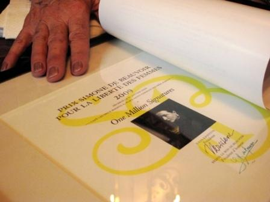
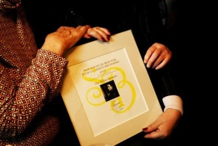
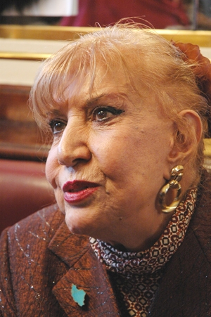
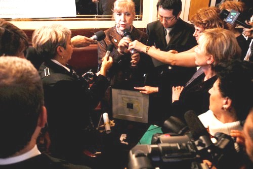
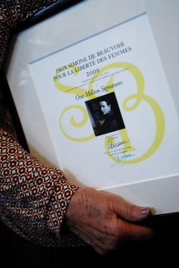
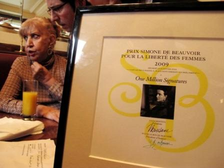
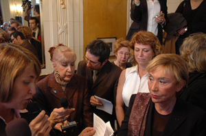
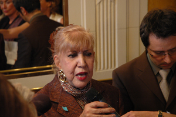
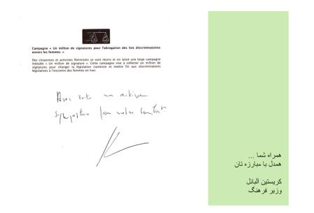
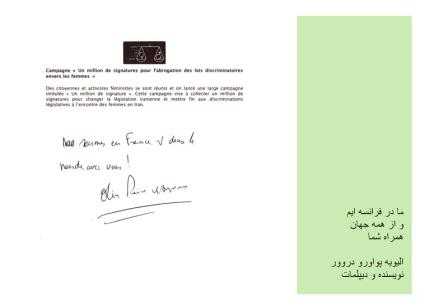
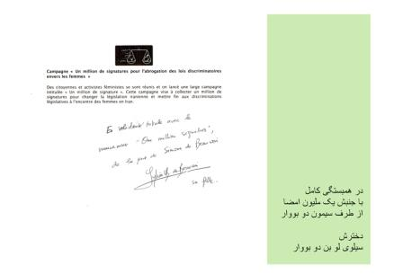
|
گزارش تصویری کمپین در پاریس از مراسم اهدای جایزه سیمون دوبووارجمعه4 بهمن 1387 عکس ها از مریم افشاری، بهار مجدزاده، آرش نعیمیان اعضای کمپین یک میلیون امضا در پاریس 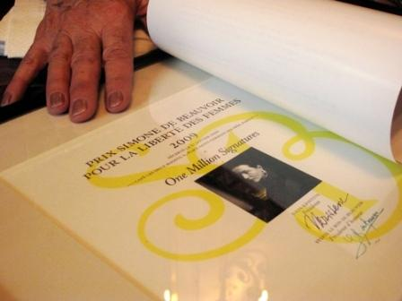
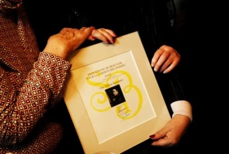 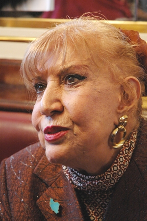 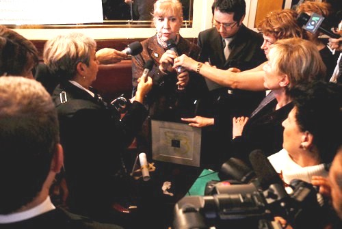 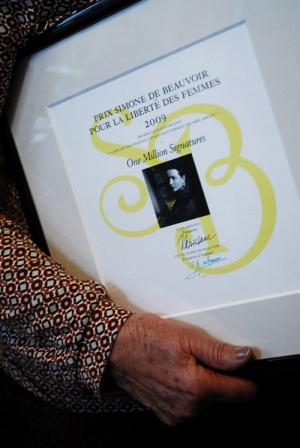 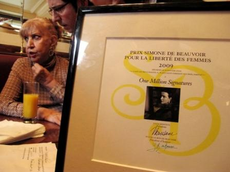 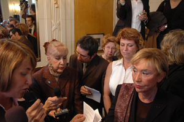 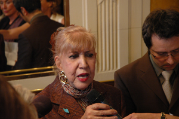 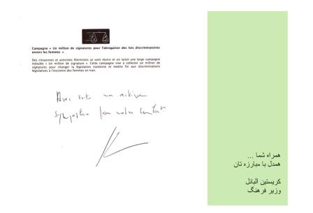 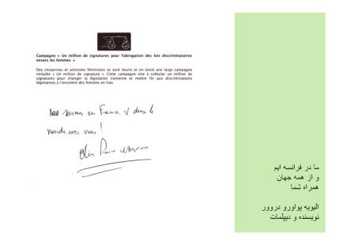 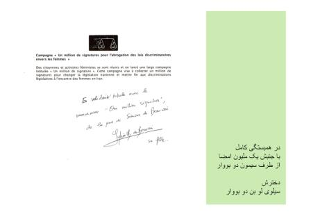 |